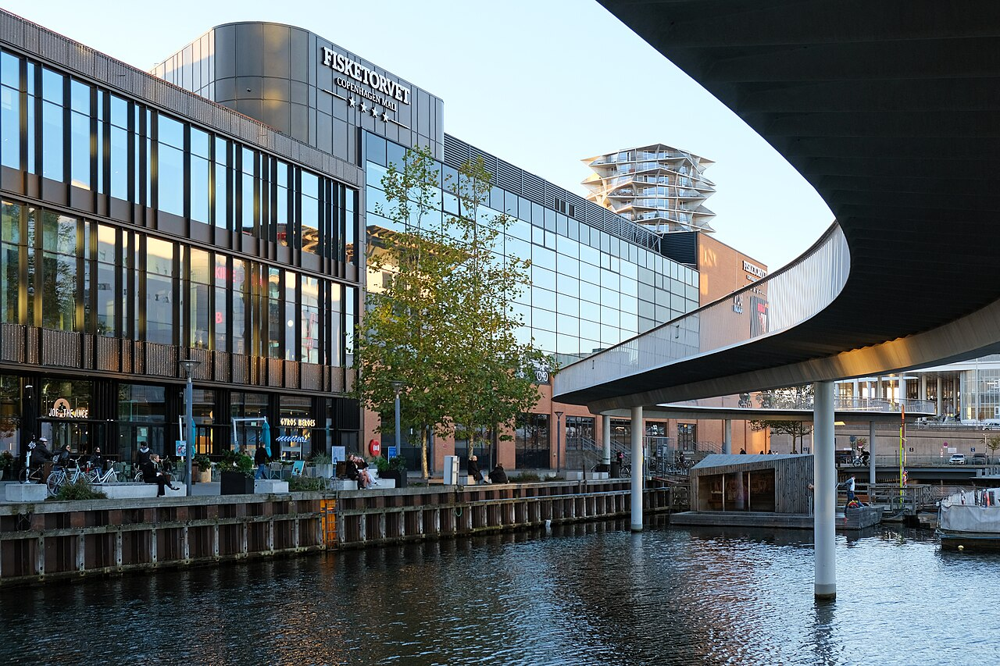
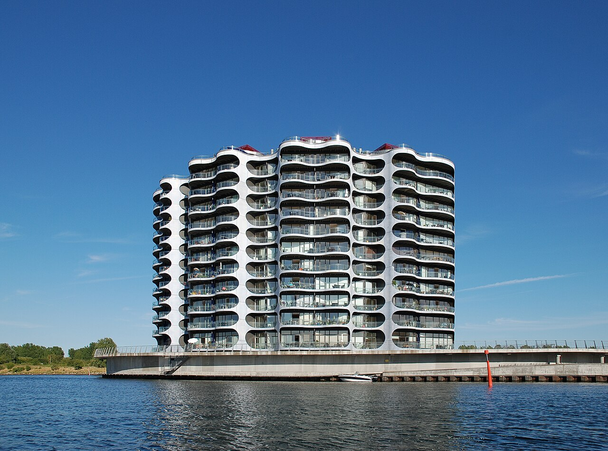
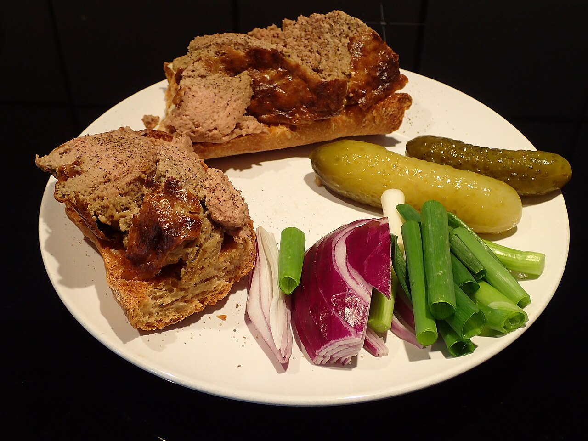

- Visos šios kelionės vietos yra pasiekiamos pėsčiomis arba Kopenhagos metro linijomis -- automobilio nuomoti nereikia.
- Iš apartamentų Sluseholmene į miesto centrą (Nyhavn, Christiania, Torvehallerne) patogiausia važiuoti M4 metro linija iki Kongens Nytorv arba Christianshavn stotelės, o toliau pėsčiomis arba persėdant į kitą liniją.
- Paskutinę dieną iki skrydžio nuo atvykimo į oro uostą turėsite apie 2 val. 15 min. -- neuždelskite išsiregistravimo iš apartamentų, kad liktų patogus laiko rezervas saugumo patikrai.
- Į Royal Arena koncertą geriausia važiuoti metro tiesiai iki Ørestad stotelės; po koncerto grįžtant patariama eiti link Vestamager stotelės, kur būna mažiau žmonių.
1 diena – Atvykimas ir Kopenhagos klasika (Nyhavn, Amalienborg, Rosenborg)
🧭 Dienos maršrutas Google Maps


2 diena – Christiania, muziejai ir Tivoli
🧭 Dienos maršrutas Google Maps


3 diena – Kanalų kelionė, Torvehallerne ir Deep Purple koncertas
🧭 Dienos maršrutas Google Maps


🥩 Slagter Lund – ~12 €/asm. Prie šio mėsininko prekystalio nuolat rikiuojasi eilė dėl keptos kiaulienos sumuštinių ir frikadelių. Žemėlapyje


🌧 Planas B (jei blogas oras)
Kodėl: Rytinė kanalų ekskursija laivu – stiprus vėjas (iki 29 km/val) ir 80% lietaus tikimybė šią dieną dažnai sąlygoja ekskursijų atšaukimą arba nemalonią kelionę.
3 diena (atsarginis planas) – Amalienborgo muziejus vietoj laivo ekskursijos
Bendras persikėlimų laikas: apie 22 min. Diena baigiasi toje pačioje vietoje kaip ir pagrindiniame plane – Royal Arenoje.
🧭 3B dienos maršrutas Google MapsPatarimas: Amalienborgo muziejus (Christiano VIII rūmai) sekmadieniais veikia 10:00–16:00 – bilietus patogiau pirkti iš anksto internetu, nes vietų skaičius ribotas.
4 diena – Atsisveikinimas su Sluseholmenu ir skrydis namo
🧭 Dienos maršrutas Google Maps



🗺️ Žemėlapis
💰 Biudžeto suvestinė (4 keliautojai)
| Kategorija | Min | Tikėtina | Maks. |
|---|---|---|---|
| Skrydžiai | 549 € | 749 € | 949 € |
| Automobilio nuoma | 0 € | 0 € | 0 € |
| Nakvynė (Sluseholmen, 3 naktys) | 360 € | 600 € | 960 € |
| Maistas (4 žm. × 4 d.) | 680 € | 860 € | 1 120 € |
| Įėjimai/bilietai (be koncerto) | 200 € | 296 € | 360 € |
| Deep Purple koncerto bilietai (4 vnt.) | 240 € | 260 € | 304 € |
| Iš viso (4 žm.) | 2 029 € | 2 765 € | 3 693 € |
| Vienam asmeniui | ~507 € | ~691 € | ~923 € |
Automobilis nenuomojamas – viskas pasiekiama pėsčiomis ir metro, todėl automobilio ir kuro išlaidų nėra.
Nakvynės kaina šioms konkrečioms datoms nėra galutinai patvirtinta – prieš rezervuojant patikrinkite kainą tiesiai nuorodoje.
⚠️ Koncerto bilietus patariame pirkti iš anksto per oficialų platintoją (ticketmaster.dk/livenation.dk) – perpardavimo rinkoje kainos siekia €300+ už bilietą.
☁️ Orų prognozė
23-10 · Kopenhaga (Sluseholmen/Sydhavnen)
Debesuota, 10.2–13.5°C
Lietaus tikimybė: 22% · Vėjas iki 17 km/h
24-10 · Kopenhaga (Sluseholmen/Sydhavnen)
Debesuota, 10.0–13.4°C
Lietaus tikimybė: 0% · Vėjas iki 20 km/h
25-10 · Kopenhaga (Sluseholmen/Sydhavnen)
Dažnai lyja, 9.4–11.7°C
Lietaus tikimybė: 80% · Vėjas iki 29 km/h
26-10 · Grįžtama į Kauną
Kartais lyja, 8.3–11.3°C
Lietaus tikimybė: 40% · Vėjas iki 24 km/h
🎒 Ką pasiimti
- Skysčius (šampūnas, dezodorantas, pastos) sudėkite į vieną skaidrų, ne didesnį nei 1 l maišelį – kiekvienas indas iki 100 ml.
- Peiliukų, žirklių ar daugiafunkcių įrankių į rankinį bagažą imti negalima.
- Oras keičiasi – rinkitės sluoksniuojamus drabužius, nes 3 dieną (10.25) numatomas lietus ir vėjas, o kitos dienos sausesnės, tad planas jau pritaikytas: lietingą dieną daugiau laiko viduje (Glyptotek, muziejus), saulėtesnes – lauke (Nyhavn, Amalienborg).
- Danijos elektros lizdai sutampa su Lietuvos (tipas C/F), tad specialaus adapterio dažniausiai nereikia.
- Kadangi automobilis nenuomojamas, visą kelionę naudosite metro/viešąjį transportą – verta iš anksto atsisiųsti DOT/Rejseplanen programėlę ir turėti kortelę kontaktiniam mokėjimui.
Drabužiai (8-14°C, vėjas, lietus 3 dieną)
Dokumentai ir pinigai
Elektronika
Higiena ir sveikata (talpos iki 100 ml)
Kita
🍴 Kur pavalgyti
1 diena
Ida Davidsen – netoli Amalienborgo pilies / Bredgade (pietų stotelė maršrute) · smørrebrødo restoranas · ~28 €/asm.
Garsiausia Kopenhagos smėrrebrėdo šeimos restoranas, veikiantis nuo 1888 m. – paklauskite dienos pasiūlymo, dažnai pigiau nei a la carte meniu. Žemėlapyje
Tutten på Mellemfortet – netoli apartamentų Sluseholmene (vakarienė) · danų kavinė/krogas · ~20 €/asm.
Jaukus vietinių lankomas krogas Sydhavne su tradiciniu danų maistu ir sąžiningomis kainomis, vos keli žingsniai nuo nakvynės. Žemėlapyje
2 diena
Slotskælderen hos Gitte Kik – netoli Nacionalinio muziejaus / Christiansborg (pietų stotelė maršrute) · smėrrebrėdo restoranėlis · ~25 €/asm.
Tradicinis, nuo 1970-ųjų veikiantis šeimos restoranėlis, kurį dažnai renkasi vietiniai politikai ir tarnautojai iš gretimo parlamento – geriausia atvykti tiksliai pietų metu. Žemėlapyje
Otto Pizza Sluseholmen – netoli apartamentų Sluseholmene (vakarienė) · picerija · ~18 €/asm.
Šeimyninė neapolietiško stiliaus picerija pačiame Sluseholmene – greita ir pigi vakarienė grįžus iš Tivoli parko. Žemėlapyje
3 diena
Hallernes Smørrebrød – netoli Torvehallerne prekyvietės (pietų stotelė maršrute) · turgaus prekystalis · ~15 €/asm.
Greičiausias ir pigiausias būdas paragauti tikro smėrrebrėdo prekyvietėje – krevetės, silkė ir kiaušinio su bulvėmis variantai yra populiariausi. Žemėlapyje
Slagter Lund – netoli Torvehallerne prekyvietės (pietų stotelė maršrute) · mėsinė su karštais patiekalais · ~12 €/asm.
Prie šio mėsininko prekystalio Torvehallerne nuolat rikiuojasi eilė dėl keptos kiaulienos sumuštinių ir frikadelių – vietinių favoritas. Žemėlapyje
Pauli – netoli apartamentų Sluseholmene (vakarienė prieš koncertą) · bistro · ~28 €/asm.
2022 m. keturių draugų įkurtas jaukus Sydhavno bistro su danų ingredientais – patogi, nesiskubinanti vakarienė prieš išvykimą į Deep Purple koncertą. Žemėlapyje
4 diena
Lagkagehuset – netoli Fisketorvet (pusryčių stotelė maršrute) · kepykla-kavinė · ~8 €/asm.
Populiariausia Danijos kepyklų tinklo vieta su šviežiais kruasanais, kanelsnekiais ir kava – puikūs pusryčiai prieš paskutinę dieną ir skrydį namo. Žemėlapyje
Baras
Hviids Vinstue – netoli Nyhavn kanalo (1 diena)
Seniausias Kopenhagos vyno baras, veikiantis nuo 1723 m. – virtinė nedidelių, žvakėmis apšviestų kambarėlių su senoviniais nuotraukomis ir tamsaus medžio interjeru, vos per kelis žingsnius nuo Nyhavno. Žemėlapyje
🍽️ Ką paragauti

Smėrrebrėdas
Tankios ruginės duonos riekelė su įvairiais užkandžiais – nuo marinuotos silkės iki krevečių, roast beef'o ar kepenų paštetо, puošiama krapais ar traškiais svogūnais. Valgomas pietums, ne vakarienei.
8–20 €Kur paragauti: Ida Davidsen, Slotskælderen hos Gitte Kik, Hallernes Smørrebrød

Frikadelės
Danų kiaulienos (ar kiaulienos su veršiena) kotletai, kepti keptuvėje ir patiekiami su bulvėmis, raudongūžiu kopūstu ir spanguolių uogiene.
10–16 €Kur paragauti: Slagter Lund, Tutten på Mellemfortet, Pauli

Kepta kiauliena su petražolių padažu
Danijos nacionalinis patiekalas – traškiai kepti kiaulienos pašonės rieketi su virtomis bulvėmis ir kreminiu petražolių padažu.
12–18 €Kur paragauti: Slotskælderen hos Gitte Kik, Pauli

Kepenų paštetas (ant duonos)
Namų gamybos kepenų paštetas, tepamas ant ruginės duonos ir puošiamas spirgintais lašinukais bei marinuotais burokėliais ar agurkais – vienas populiariausių smėrrebrėdo užpilų.
6–14 €Kur paragauti: Ida Davidsen, Hallernes Smørrebrød
Žvaigždžių kritimas
Šventinis smėrrebrėdas iš keptos ir garuose virtos plekšnės, krevečių, kaviaro ir majonezo – klasikinis senų smėrrebrėdo restoranų pasirinkimas.
15–22 €Kur paragauti: Ida Davidsen

Kanelsnekis
Sukinis pyragaitis su cinamonu ir glajumi – klasikinis danų kepyklos gaminys, skirtas pusryčiams ar kavos pertraukai.
3–6 €Kur paragauti: Lagkagehuset
ℹ️ Praktinė informacija
- ✈️ Skrydis į Kopenhagą
- FR6156 (Ryanair), KUN 09:10 → CPH 09:40, 2026-10-23
- ✈️ Skrydis namo
- FR6155 (Ryanair), CPH 15:15 → KUN 17:45, 2026-10-26
- 🚗 Automobilis
- Nenuomojamas – visa kelionė pėsčiomis ir metro
- 🏠 Nakvynė
- Apartment with Canal View, Kenny Drews Vej 31, 2. sal, lej. 9, Sluseholmen/Sydhavnen, 2450 Kopenhaga SV (3 naktys)